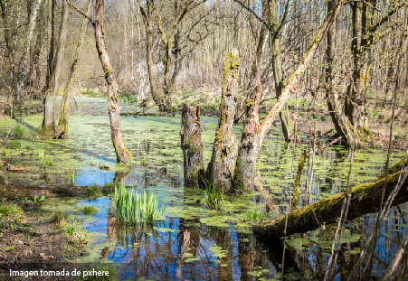

Las especies para poder sobrevivir necesitan interactuar con el medio así como con otros organismos. En el último caso se puede decir que los miembros de una comunidad pueden interactuar de dos formas: la primera es entre los miembros de una misma especie (interacción intra-específica) y la segunda es entre miembros de dos o más especies (interacciones interespecíficas). Las relaciones entre las especies pueden ser muy diversas, como cuando solo una especie obtiene algún beneficio (antagonista) como cuando una especie se alimenta de otra (predación), hasta dos especies que viven en un beneficio mutuo (mutualismo).
Para ejemplificar esto podríamos ver este tipo de interacciones en un ecosistema particular como el humedal. Los humedales se localizan en áreas donde las aguas se encuentran cerca de la superficie terrestre o en zonas de agua poco profundas.
Entre los tipos de humedales costeros podemos encontrar manglares, pantanos, y otros sistemas sujetos a inundación estacional, tales como selvas inundables y los acahuales
Una de las funciones fundamentales de los humedales es la regulación del ciclo de carbono y el desarrollo de procesos ecológicos y evolutivos para la conservación de la biodiversidad y la regulación de la biosfera.